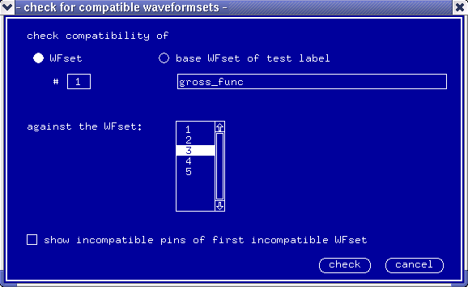

Checking for Compatible Waveform Sets
Having got your timing and your vectors set up, and your test to run, you may now want to modify the timing and store it to a new waveform set (perhaps by editing an old waveform set). Or you may have several different waveform sets, which you will want to use with the same test vectors.
For your test to run, the new waveform set must be compatible with the old one, which runs with (is compatible with) your vectors. To see if two waveform sets are compatible with each other, make the waveform set compatibility check.
In the Check pulldown menu select the compatible... option. The dialog box check for compatible waveformsets appears, see the figure below.

You can check waveform set compatibility of:
- the selected waveform set against another waveform set
- the Base waveform set against another waveform set